Казань
| Численность населения: ↗ 1 314 685. | Территория города:614,16 км 2 |
| Часовой пояс:UTC+3 | Телефонный код:+7 (843) |
| Почтовый индекс:420000 | "Стоимость жилья за м 2 : 69600 руб. |
Средняя температура в городе по месяцам:
| Дек. | Янв. | Фев. | -8,6° | -10,4° | -10,1° |
|---|---|---|
| Мар. | Апр. | Май. | -3,9° | +5,5° | +13,3° |
| Июн. | Июл. | Авг. | +18,1° | +20,2° | +17,6° |
| Сен. | Окт. | Ноя. | +11,7° | +4,8° | -3,4° |


Казань – столица Республики Татарстан и один из самых древних городов России. Казань расположилась на левом берегу Волги в том месте, где в нее впадает река Казанка. Эта река течет с северо-востока на запад, пересекая центр города и условно разделяя его на две части. Попасть из одной части Казани в другую очень легко, так как городские районы связывают дамбы, мост и линия метрополитена.
Основные моменты
Древнюю Казань, отпраздновавшую в 2005 году свое тысячелетие, часто называют третьей столицей России. Этот город, один из десяти крупнейших в стране, заслужил славу наиболее быстро развивающегося туристического центра, который ежегодно посещают более 2 миллионов туристов. И это не удивительно, ведь Казани есть что предложить своим гостям.
Город, находящийся на оживленном торговом перекрестке Востока и Запада, имеет богатую историю, и она отображена в его многочисленных достопримечательностях. В Казани переплелись две древние культуры, и мирно соседствуют две религии, христианская и мусульманская. Памятники и музеи, монастыри и медресе, православные храмы и мечети, купеческие дома и родовые особняки хранят на себе отпечаток русских и татарских традиций.
Казань не застыла в своем прошлом, и ее облик постоянно меняется. Здесь принимают гостей модерновые развлекательные комплексы, на современных спортивных аренах проходят престижные международные соревнования, а торговые центры-моллы соблазняют богатством своих витрин. Сегодня в городе продолжается строительство торгово-развлекательных комплексов, выставочных павильонов, планируется возведение нового делового района.
В живописных окрестностях Казани расположились санатории и турбазы, где в комфортных условиях можно прекрасно провести время на берегу великой русской реки: поплавать, порыбачить, насладиться красотой местной природы.
 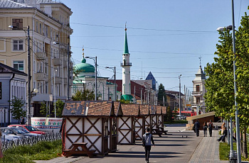
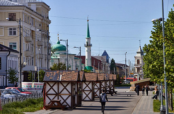


Улицы Казани
История Казани
Недавние раскопки, проведенные на территории Казанского государственного университета, засвидетельствовали, что люди начали селиться в этих местах еще в каменном веке. Известно также, что уже в III веке до н. э. в Среднем Поволжье появились финно-угорские племена – далекие предки народов, населяющих сегодня северо-восточную Европу. В X-XI веках на эти земли из Северного Причерноморья и Северного Кавказа мигрировали булгарские тюркские племена. Они осели на левобережье Волги, где основали государство, известное как Волжская Булгария. Именно с этого времени начинает свой отсчет и история Казани, выстроенной как город-крепость для защиты северных рубежей булгарской державы.
Существует не менее двух десятков версий о происхождения названия города. Но, как наиболее вероятные, выделяются две, связанные с рельефом местности, где он расположен, и его географической дислокацией. Они предполагают, что свое имя Казань получила от одного из двух тюркских слов «казан» («котел», «котлован») или «каш-ан» («граница, край).

Казань в XVIII веке, гравюра Ф. Дени Не
На протяжении веков Казань пребывала в эпицентре исторических событий, которые превратили ее из заурядной приграничной крепости во влиятельный богатый город. После падения Волжской Булгарии под натиском монголо-татарских войск в 1236 году и присоединения этой земли к Улусу Джучи, более известному как Золотая Орда, Казань постепенно взяла на себя роль экономического и политического центра региона.
В 1438 году, в период распада Золотой Орды, город захватил свергнутый золотоордынский хан Улуг-Мухаммед, положив начало существованию независимого Казанского ханства, которому принадлежали обширные территории. Ханство имело тесные экономические связи с русскими землями, но заключаемые договора постоянно нарушались военными действиями: ханы совершали набеги на русские княжества, в ответ русские рати разоряли их земли. Эта беспокойная эпоха закончилась в 1552 году, когда 150-тысячная армия во главе с Иваном Грозным штурмом взяла Казань.

 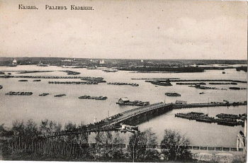
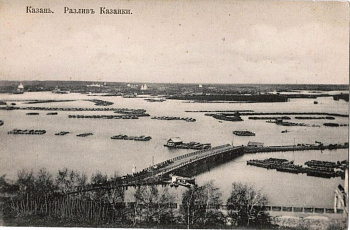
Казань начала XX века
По приказу царя казанские татары были выселены за стены посада, а в опустевший город целыми слободами начали переселять русский народ. Сюда же царь велел направить лучших мастеров, чтобы отстроить разрушенный боевыми действиями город.
До XVII века Казань, оправдывая свое стратегическое положение, жила жизнью военного города: на ее крепостных стенах сменяли друг друга дозоры, мосты на ночь поднимались. Но, по мере продвижения границ русского государства на Восток, Казань теряла свое военное значение, постепенно превращаясь в крупный административный и торговый город. В 1708 году она стала столицей Казанской губернии, и вплоть до революции 1917 года являлась коммерческим, торговым, культурным и образовательным центром Поволжья.

Памятник-часовня в честь взятия Казани. 1894 год
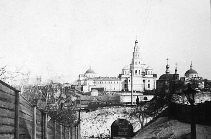Дмитриевские ворота Казанского кремля в 1912 году

Речное училище в Адмиралтейской слободе. 1917 год
В 30-е годы XX века Казань вошла в эпоху индустриализации, что сопровождалось расширением границ города и увеличением его населения. Сегодня в Казани проживает более миллиона человек. В основном это русские и татары, также здесь издавна живут чуваши, марийцы, башкиры.
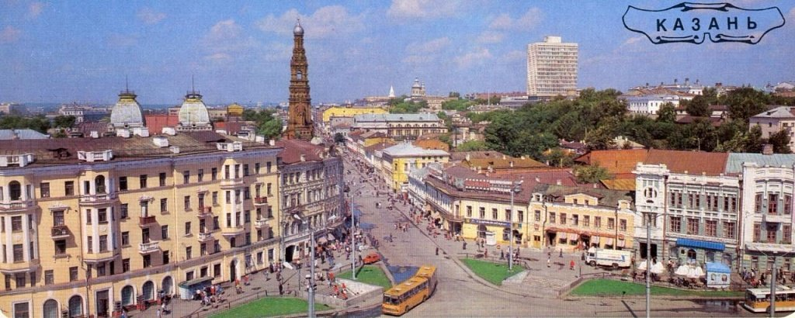Площадь Куйбышева в 1989 году
Достопримечательности Казани
Путешествие по Казани – занятие увлекательное и познавательное. Вы можете отправиться на автобусную экскурсию в сопровождении аудиогида или познакомиться с городом самостоятельно, чтобы неспешно осмотреть его многочисленные архитектурные и культурные достопримечательности, побродить по старинным улочкам, посидеть в одном из уютных ресторанов с национальной кухней. Если вы остановитесь на втором варианте, обязательно обзаведитесь картой или воспользуйтесь навигатором. Казань – большой город, территория условно разделена на две части: историческую и современную. Старинные кварталы расположены в центральном, Вахитовском районе. Именно здесь находится гордость Республики Татарстан – Казанский кремль, внесенный в список памятников Всемирного наследия ЮНЕСКО, а также Старо-Татарская слобода, любимые туристами пешеходные улицы Баумана и Кремлевская, старые мечети и православные храмы, театры и музеи.
Современный город с высотными зданиями и торгово-развлекательными центрами разместился на противоположном берегу Казанки. Он связан с историческим центром мостом Миллениум и тремя дамбами.
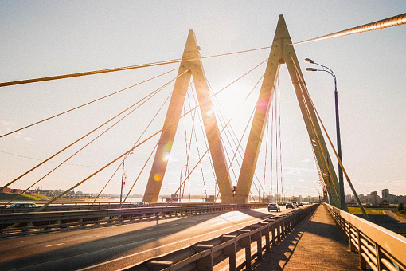Мост Миллениум в Казани
Казанский Кремль
Знакомство с Казанью туристы обычно начинают с экскурсии в Казанский кремль. Этот грандиозный историко-архитектурный комплекс раскинулся на территории 1500 га и включает в себя памятники XII-XX веков. Обычно обзорная экскурсия по Казанскому кремлю длится около полутора часов, но, чтобы обстоятельно осмотреть все его достопримечательности, понадобится провести здесь по меньшей мере целый день.
Кремль был заложен, как предполагается, в X веке. Сначала он служил форпостом северных границ Волжской Булгарии, а затем стал центром Казанского ханства. В 1552 году, во время штурма Казани войсками Ивана Грозного, многие постройки твердыни были стерты с лица земли. Во время восстановительных работ, начавшихся сразу после завоевания Казани, территория кремля была значительно расширена, вместо деревянных оборонительных сооружений возводились каменные.
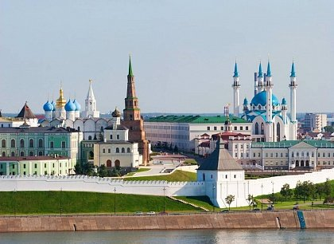Казанский кремль
Сегодня на входе в кремль гостей встречает Спасская башня, далее взору открываются Юго-Западная, Безымянная и Преображенская башни. Хорошо сохранились еще несколько сторожевых башен, а от некоторых остались лишь фундаменты.
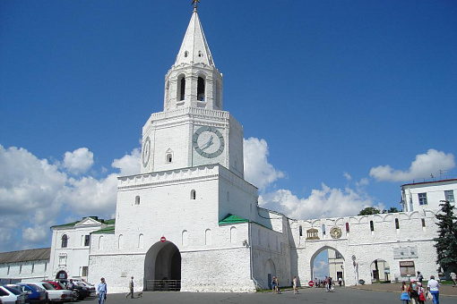Спасская башня Казанского кремля
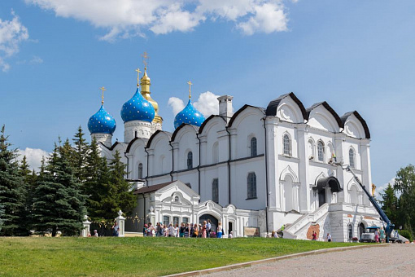Благовещенский собор
Ярчайшая жемчужина в ансамбле Казанского кремля – Благовещенский собор, старейшее сооружение цитадели. Эта великолепная церковь, выстроенная в XVI веке, на протяжении нескольких веков, вплоть до революции 1917 года, являлась кафедральным храмом Казанской епархии.
Улица Баумана
Недалеко от Казанского кремля расположена площадь Тысячелетия, где проходят все крупные городские праздники. От нее в направлении Старо-Татарской слободы протянулась пешеходная улица Баумана – любимое место прогулок горожан и туристов. По обе ее стороны расположились магазины, кафе, рестораны. Здесь проходят уличные концерты, оттачивают свое мастерство художники, идет оживленная торговля сувенирами.
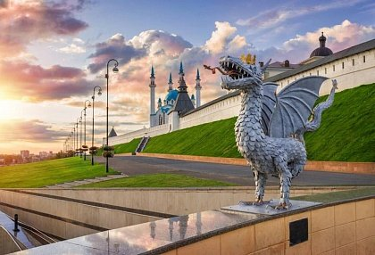Скульптура Зиланта на площади Тысячелетия в Казани
Прогуливаясь по этой старинной улице, ровеснице Казанского кремля, вы сможете полюбоваться оригинальными памятниками и красивыми зданиями дореволюционной эпохи.
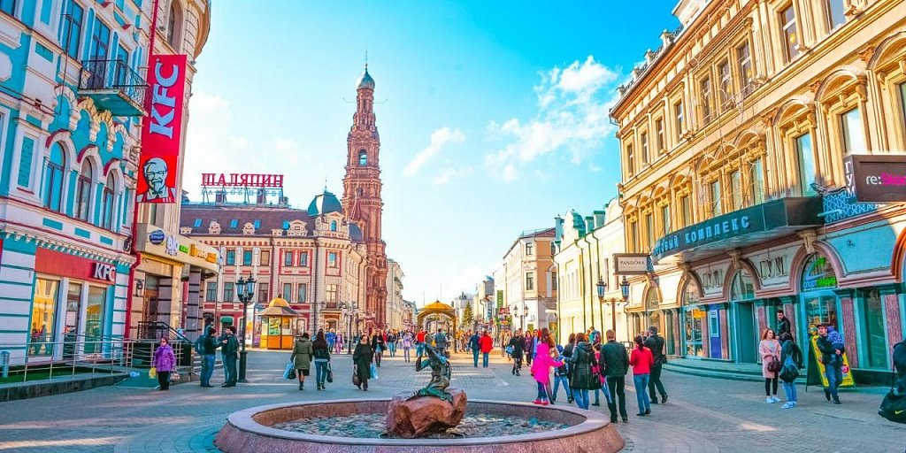Улица Баумана в Казани